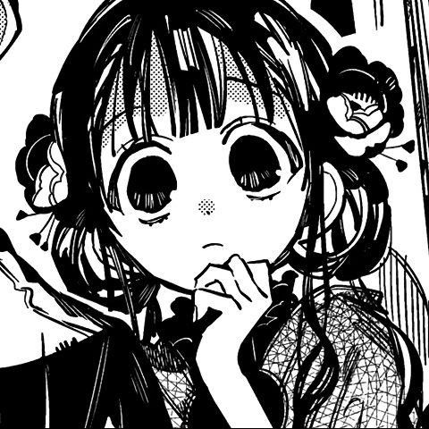

Tsuchigomori
Tsuchigomori Ryūjirou is a science teacher at Kamome Academy. He is secretly a Supernatural, representing and curating the academy's 5th School Wonder, the 4PM Bookstacks.
Hanako
Hanako, whose real name is Yugi Amane, is the main character of Jibaku Shounen Hanako-kun. He is a ghost of a deceased student haunting the old building of Kamome Academy.
Akane Aoi
Akane Aoi is a first year student at Kamome Academy's High School Division and Nene's best friend. She is mainly used in the plot to introduce supernatural rumors to Nene.
Yashiro Nene
Yashiro Nene is a main character in Jibaku Shounen Hanako-kun. She is a first-year high school student at Kamome Gakuen's High School Division.